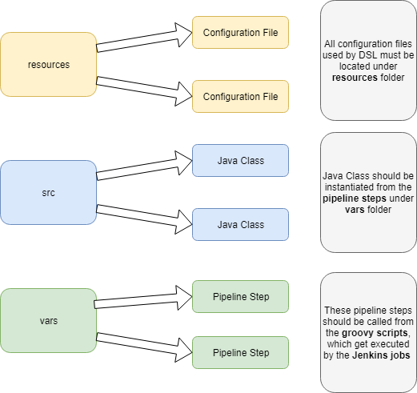

Jenkins infrastructure will have Master and Agents
// Groovy common imports
import com.cloudbees.groovy.cps.NonCPS
import groovy.json.JsonBuilder
import groovy.json.JsonOutput
import groovy.json.JsonSlurper
import groovy.json.JsonSlurperClassic
// Groovy commenting
/**
* Description about the method
* @param param1 description about param1
* param2 description about param2
* @return return value
*/
// "NonCPS" annotation
// This annotation will tell Groovy not to Serialize the method. During the code execution, unserialized code may not be interruptable.
// This annotation is used for example when a method is called instande a constructor, when working with file stream, etc.// Groovy map example.
Map map = [
key: [
subkey1: "value"
subkey2: [
subsubkey1: "value",
subsubkey2: "value"
]
]
]
// Initialize a map.
Map map = [:]
// Loop through a map.
map.each {
// do something with "it" (for example, "it.key" and "it.value")
}
// Find the value by key in a map.
map.find { it.key.toString().trin() == "key" }?.value
// Check if a map/dictionary contains a key.
if (dict.containsKey()) {
}
// Add to a map/dictionary.
dict.put("key", "value")// Find files in the current directory.
findFiles(glob: '*.yaml')
// Check if file exists.
def absolutePath = "absolute path of the file"
File file = new File(absolutePath)
file.exists()
// Create a file with content.
writeFile(file: "fileName", text: fileContent)
// Read a file into a variable.
readFile "fileName"// Convert YAML to JSON.
def absolutePath = "absolute path of the YAML file"
def fileInYaml = readYaml file: absolutePath
def fileInJson = new JsonBuilder(fileInYaml).toPrettyString()
// Convert JSON string to JSON object.
jsonObject = new JsonSlurperClassic().parseText(jsonString)
// Convert JSON object to JSON string.
jsonString = new JsonBuilder(jsonObject).toPrettyString()
// Create a JSON string.
String json = new JsonBuilder([
field1: value1,
field2: value2,
field3: value3
]).toString()// Loop through a list.
for (i in list) {
// do something with "i"
}
// Convert String to a list.
String myListInString = "['first', 'second', 'third']"
def myList = myListInString[1..-2].split(', ')// In-line if/else: If a is null, b is assgiend. Else, c is assigned.
def val = (a == null) ? b : c
// Break the outerloop in a nested loop.
loop:
for (foo in foos) {
for (var in vars) {
if (condition) {
break loop
}
}
}// Switch
switch(variable) {
case "value1":
// Do something.
break
case "value2":
// Do something.
break
default:
// Do something.
}// Pipeline methods
stage("stage name")
dir("directory name")
withEnv(["ENV_VAR_NAME1=${variable1}", "ENV_VAR_NAME2=${variable2}"])
withCredentials([usernamePassword(credentialsId: credentialObjectId, passwordVariable: "PASSWORD", usernameVariable: "USERNAME")])
String credentialId = scm.getUserRemoteConfigs()[0].getCredentialsId()
sshagent([credentialId])
env.getProperty("string_parameter") // Get the value of a parameter to a Jenkins Job// Http request plugin
httpRequest(
authentication: credentialObjectId,
contentYpe: "APPLICATION_JSON",
httpMode: "GET",
customHeaders: "",
url: "",
ignoreSslErrors: true
)
// Downloads a file
httpRequest(
url "",
responseHandle: "NONE",
outputFile: "",
timeout: ""
)// Bash integration
String variable = sh returnStdout: true, script: 'some bash command'Create jobs by executing "Jenkinsfile" from a seeder job.
Define the job.
pipelineJob("pathToJob") {
def releaseRef = "master" // Or can be "refs/tags/<version>"
logRotator {
numToKeep(10) // Keep only 10 builds in the history.
}
parameters {
StringParam('parameterName', 'defaultValue', 'description')
...
}
environmentVariables {
keepSystemVariables(true)
keepBuildVariables(true)
envs (
'NAME_OF_ENV_VAR': 'VALUE_OF_ENV_VAR'
)
}
description("Description of Jenkins job")
definition {
cpsSCM {
scm {
git {
remote {
url('gitCloneUrl')
credentials('nameOfCredentialObject')
}
branch('*/master') // Or can be "refs/tags/<version>"
extensions {
cloneOptions {
honorRefspec(true)
}
}
}
}
scriptPath('pathToPipelineScript')
}
}
}Write the script that the Job runs.
@Library('name-of-your-lib@version') _
import path.to.utils.Utils
// This logic runs on Jenkins master.
node () {
timestamps { // Enable time stamps on console output.
wrap([$class: 'AnsiColorBuildWrapper', 'colorMapName': 'XTerm']) {
stage("Name of your stage") {
...
}
}
}
}
// This logic runs on Jenkins agent with the match label.
node (label) {
timestamps {
try {
wrap([$class: 'AnsiColorBuildWrapper', 'colorMapName': 'XTerm']) {
withCredentials([[$class: 'UsernamePasswordMultiBinding', credentialsId: 'nameOfCredentialObject', usernameVariable: 'USERNAME', passwordVariable: 'PASSWORD']]) {
dir() { // Change directory.
stage("Name of your stage") {
...
}
}
}
}
}
}
}Library should look like this.
package path.to.utils
public class Utils implements Serializable {
def context
public Utils(def context) {
this.context = context
}
...
Jenkins pipeline is a tool to implement CI/CD. DSL (Domain Specifc Language) is the programming language used to write the Jenkins pipeline.
DSL has many keywords. For example,
All key words must be written inside node block. Otherwise, pipeline would throw compilation error.
node {
dir()
stage()
sh
}Maven operations examples
stage("Maven Build") {
withEnv(["PATH=WHATEVER=PATH_TO_MAVEN:PATH_TO_JDK"]) {
sh """ mvn clean install -B """
}
}
stage("Maven Publish") {
withEnv(["PATH=WHATEVER=PATH_TO_MAVEN:PATH_TO_JDK"]) {
sh """ mvn deploy -DskipTests -B """
}
}
stage("Maven Release") {
withEnv(["PATH=WHATEVER=PATH_TO_MAVEN:PATH_TO_JDK"]) {
sh """ mvn -B release:prepare release:perform """
}
}Download the latest artfact from Nexus
stage("Download latest artifact from Nexus") {
// These parameters would be specific to artifact you are trying to download
String nexusUrl = "YOUR_NEXUS_URL"
String repository = "YOUR_REPOSITORY"
String groupId = "YOUR_GROUP_ID"
String artifactId = "YOUR_ARTICAT_ID"
String packaging = "PACKAGING"
// Build Nexus end-point using artifact-specific parameters
String nexusLink = nexusUrl+"/"+repository+"/"+groupId.replace(".","/")+"/"+artifactId
sh """
# querying artifact's metadata and
response=\$(curl --silent --compressed ${nexusLink}/maven-metadata.xml)
# parsing xml response to get the version number
version=\$(grep -oPm1 '(?>=<release>)[^<]+' <<< \$response)
# downloading the artifact
wget --no-check-certificate --output-document $DIRECTORY_TO_PLACE_ARTIFACT ${nexusLink}/\$version/${artifactId}-\$version.${packaging}
"""
}Upload an artfact to Nexus
stage("Upload artifact to Nexus") {
sh """
mvn deploy:deploy-file -Dfile=YOUR_FILE -DgroupId=YOUR_GROUP_ID -DartifactId=YOUR_ARTIFACT_ID -Dversion=YOUR_VERSION -Dpackaging=YOUR_PACKAGING -DgeneratePom=true -DcreateChecksum=true -DrepositoryId=releases -Durl=YOUR_NEXUS_URL_INCLUDING_AUTHENTICATION_AND_PATH_TO_REPOSITORY
"""
}Send build status to Jenkins (Requires "http_request" plugin)
stage("Notify Bitbucket") {
String commitHash = sh returnStdout: true, script 'git rev-parse HEAD'
String shortCommitHash = sh returnStdout: true, script 'git rev-parse --short HEAD'
def requestBody = new JsonBuilder([
state: "YOUR_STATE" // can be one of SUCCESSFUL, IN PROGRESS, STOPPED, FAILED
key: env.BRANCH_NAME + "-" + shortCommitHash
url: env.BUILD_URL
])
// Be careful about the endpoint
String requestUrl = "YOUR_BITBUCKET_URL" + "/rest/build-status/1.0/commits/" + commitHash
def response = httpRequest authentication: "YOUR_BITBUCKET_CREDENTIAL", contentType: "APPLICATION_JSON", httpMode: "POST", requestBody: requestBody, url: requestUrl
}Send an email (Requires "email-ext" plugin)
stage("Send Email") {
mail bcc: "", body: YOUR_EMAIL_BODY, cc: "", from: "", replyTo: "", subject: YOUR_SUBJECT, to: YOUR_EMAIL_LIST
}SONARQUBE_ENVIRONMENT must be set up in the Jenkins (Manage Jenkins -> Configure System). You need supply information such as Sonarqube server url, authentication token, etc
Execute SonarQube scan and get the result (Requires "sonar-maven-plugin")
stage("SonarQube") {
withSonarQubeEnv("SONARQUBE_ENVIRONMENT") {
withEnv(["PATH=WHATEVER=PATH_TO_MAVEN:PATH_TO_JDK"]) {
sh """
mvn org.sonarsource.scanner.maven:sonar-maven-plugin:3.3.0.603:sonar -B
"""
}
}
def sonarQubeScanResult = waitForQualityGate()
println sonarQubeScanResult
}If not using Maven, you can use sonar-scanner package. In this case, you need to have project properties file in the code repository
stage("SonarQube") {
withSonarQubeEnv("SONARQUBE_ENVIRONMENT") {
withEnv(["PATH=WHATEVER=PATH_TO_SONAR_SCANNER"]) {
sh """
sonar-scanner -Dsonar.projectBaseDir=$DIRECTORY_WHERE_PROJECT_PROPERTIES_IS_LOCATED
"""
}
}
def sonarQubeScanResult = waitForQualityGate()
println sonarQubeScanResult
}Execute Sonatype scan (Requires "nexus-jenkins-plugin")
stage("SonaType") {
def result = nexusPolicyEvaluation failBuildOnNetworkError: false, iqApplication: "YOUR_SONATYPE_APP_ID", iqStage: "SonaType", jobCredentialsId: ""
if (result != null) {
def criticalIssues = policyEvaluationResult.criticalComponentCount
def severeIssues = policyEvaluationResult.severeComponentCount
def moderateIssues = policyEvaluationResult.moderateComponentCount
println criticalIssues
println severeIssues
println moderateIssues
}
}Execute Veracode scan (Requires "veracode-jenkins-plugin")
stage("Veracode") {
withCredentials([usernamePassword(credentialsId: '', passwordVariable: 'VERACODE_PASSWORD', usernameVariable: 'VERACODE_USERNAME')]) {
veracode applicationName: "YOUR_VERACODE_APP_ID", canFailJob: false, createSandBox: true, criticality: "veryhigh", debug: true, sandboxName: "YOUR_VERACODE_SANDBOX_ID", vuser: env.VERACODE_USERNAME, vpassword: env.VERACODE_PASSWORD
}
}This would only work on a Windows agent.
stage("SOA Test") {
withEnv(["SOATESTPATH=PATH_TO_SOA, SOA_LOCATION=YOUR_SOA_TEST_FOLDER_LOCATION, OPTIONS=YOUR_SOA_TEST_OPTIONS"]) {
bat '''
"%SOATESTPATH%\\soatestcli.exe" -data %WORKSPACE% -import %WORKSPACE%\\%SOA_LOCATION%\\.project
"%SOATESTPATH%\\soatestcli.exe" -data %WORKSPACE% -resource %SOA_LOCATION% -config "user://Example Configuration" %YOUR_SOA_TEST_OPTIONS%
'''
}
}stage("Run Jenkins Job") {
Map jobParameterMap = [[$class: 'StringParameterValue', name: 'PARAMETER_NAME1', value: 'PARAMETER_VALUE1'], [$class: 'StringParameterValue', name: 'PARAMETER_NAME2', value: 'PARAMETER_VALUE2']]
def result = build job: PATH_TO_YOUR_JOB, parameters: evaluate(jobParameterMap), wait: true
}Instead of writing DSL directly into Jenkins jobs, you can store DSL in a repository and call them from Jenkins jobs. This is the idea of "shared library" and its structure should be the following.
Note that the pipeline steps under "var" folder must implement "call" method. Each pipeline step should begin with/
#!/usr/bin/groovy
def call(body) {
// Code goes here
}Multibranch pipeline allows Jenkins to build jobs automatically whenever any change in a branch of code repository is detected by the Jenkinsfile. This Jenkinsfile should be located in the root of code repository.
Multibranch pipeline is where the use of "shared library" becomes a MUST. First of all, the Jenkinsfile in the root of code repository should look like.
# NAME_OF_SHARED_LIBRARY should be set in Manage Jenkins -> Configure System
# NAME_OF_BRANCH should be set to a branch used for productionalized code (usually such branch is "master")
# "mainMethod" must be a pipeline step from the shared library. It is a good practice to pass in the name of repository so that repository-specific configuration can be read when executing the pipeline
#!groovy
@Library("NAME_OF_SHARED_LIBRARY@NAME_OF_BRANCH")
mainMethod("NAME_OF_CODE_REPOSITORY")Implementation of resources/com/rieh/jenkins/maven-project/project.yaml
agent: 'LINUX-AGENT'
tools: ['jdk','maven']
workflow:
branch: 'develop'
steps:
- mavenBuild:
agent: 'LINUX-AGENT'
stage_name: 'MAVEN BUILD'
checkout_scm: true
clean_up_workspace: false
mvn_command: 'mvn clean install'
- sonarQubeScan:
agent: 'LINUX-AGENT'
stage_name: 'SONARQUBE SCAN'
checkout_scm: false
clean_up_workspace: false
sonarqube_strategy: 'MAVEN'
- sonatypeScan:
agent: 'LINUX-AGENT'
stage_name: 'SONATYPE SCAN'
checkout_scm: false
clean_up_workspace: false
sonatype_application_id: 'CFP'
- veracodeScan:
agent: 'LINUX-AGENT'
stage_name: 'VERACODE SCAN'
checkout_scm: false
clean_up_workspace: false
veracode_application_id: ''
veracode_sandbox_id: ''
veracode_upload_pattern: '**/target/**.war'
veracode_wait_for_completion: false
- mavenPublish:
agent: 'LINUX-AGENT'
stage_name: 'MAVEN PUBLISH'
checkout_scm: false
clean_up_workspace: false
mvn_command: 'mvn deploy -DskipTests -B'
version_strategy: 'PATCH'
- jbossDeploy:
agent: 'LINUX-AGENT'
stage_name: 'JBOSS DEPLOY'
checkout_scm: false
clean_up_workspace: false
deployment_env: 'DEV'
deployment_target: ''
deployment_artifact: 'target/**.war'
- soaTest:
agent: 'SOA-AGENT'
stage_name: 'SOA TEST'
checkout_scm: true
clean_up_workspace: true
test_soa_scripts: ''
test_soa_options: ''
- notification:
agent: 'LINUX-AGENT'
stage_name: 'EMAIL NOTIFICATION'
checkout_scm: false
clean_up_workspace: false
notification_type: 'EMAIL'
notification_email_sender: ''
notification_email_recipients: ''We want to treat Jenkinsfile as a kind of configuration file that projects can choose during runtime. Thus, the content of Jenkinsfile should be minimized so that major logic is handled in the main method.
There are many things to do in the main methods. First of all, we want to identify the project by parsing the SCM url so that we can pick the right configuration file for that project.
String scmUrl = this.scm.getUserRemoteConfigs()[0].getUrl()
String scmName = scmUrl.split("/")[scmUrl.split("/").size()-1].replace(".git", "")Then, we want to go ahead to grap the configuration file for the project. There will always be two kinds of configuration file: 1. Global config that applies to all projects 2. Project config, which is specific for the project and can overide the global config during runtime. The following step shows how these two configs can be consolidated.
node {
String globalConfigString = this.libraryResource("com/rieh/jenkins/util/default_settings.yaml")
String projectConfigString = this.libraryResource("com/rieh/jenkins/$scmName/jenkinsConfig.yaml")
this.writeFile file: "global_config", text: globalConfigString
this.writeFile file: "project_config", text: projectConfigString
Map globalConfig = this.readYaml file: "global_config"
Map projectConfig = this.readYaml file: "project_config"
config = com.rieh.jenkins.util.Utilities.reconcileConfig(projectConfig, globalConfig)
}Next step is to find the pipeline workflow for the current branch. We also need to consider the case where there are default steps to run when the pipeline workflow for the current branch is not defined in the project configuration file.
Map config = null
Map workflow = null
Map defaultWorkflow = null
String currentBranch = env.BRANCH_NAME.split('/')[0]
currentBuild.result = "SUCCESS"
for (wf in config.workflow) {
if (wf.branch == currentBranch) {
workflow = wf
}
else if (wf.branch == config.default_branch) {
defaultWorkflow = wf
}
}
if (workflow == null) {
if (defaultWorkflow == null) {
currentBuild.result = "ABORTED"
return // exit pipeline prematurely
}
else {
workflow = defaultWorkflow
}
}It is possible that you have multiple Jenkins masters with different Jenkins version and different sets of plugins. This means the syntax of shared pipeline library may work in one Jenkins master but not in the others. Thus, you would need "feature toggle" for the code base such that different methods are triggered depending on which Jenkins master that the code is running. To to so, we first need to identify the Jenkins master.
String internalHostname = InetAddress.localHost.canonicalHostName
switch(internalHostName) {
case "[internalHostName1]":
config.pipeline_version = "v1"
break
case "[internalHostName2]":
config.pipeline_version = "v2"
break
default:
currentBuild.result = "ABORTED"
return // exit pipeline prematurely
}Here we write Utilities class the provide "static" methods.
package com.rieh.jenkins.util
import java.util.Map
@Singleton
public class Utilities {
}The implementation of "reconcileConfig" methods from the "mainMethod.groovy" is given here.
public static Map reconcileConfig(Map projectConfig, Map globalConfig) {
if (projectConfig == null) {
return globalConfig
}
else {
Map config = globalConfig.clone()
for (item in projectConfig) {
config[item.key] = projectConfigp[item.key]
}
return config
}
}To structure the shared pipeline library, we will need an abstract class that represents what we are trying to do. We are really writing pipeline steps, so lets create an abstract class "Step". Implemeting the interface "Serializable" is very important when writing Jenkins pipeline, which we will explore in a separate section.
package com.rieh.jenkins
public abstract class Step implements Serializable {
}On top of declaring variables and abstract methods, we want to have some methods that can be used by children classes that extends it. (Thus the "protected" scope) An example of useful method is to run Bash or Shell command depending on which OS the command is run.
protected void runOsCMD(Object scope, String command) {
if (scope.isUnix()) {
scope.sh(command)
} else {
scope.bat(command)
}
}We also need a class that will produce reports on execution of Jenkins pipeline. This report can be sent via email after each pipeline workflow finishes.
package com.rieh.jenkins.util
@Singleton
public class Reporter {
}This class should contain methods such as.
public static void setupReporting(Object scope) {
scope.writeFile file: 'reporting/build_report.html', text: ""
scope.stach includes: 'reporting/*', name: java.net.URLDecoder.decode(scope.env.BUILD_TAG).replace('/','-')
}public static void addToReport(Object scope, String report, String agent) {
scope.unstash name: java.net.URLDecoder.decode(scope.env.BUILD_TAG).replace('/','-')
def appender = scope.readFile file: 'reporting/build_report.html'
appender += report
scope.writeFile file: 'reporting/build_report.html', text: appender
scope.stash includes: 'reporting/*', name: java.net.URLDecoder.decode(scope.env.BUILD_TAG).replace('/','-')
}public static String consolidateReport(Object scope) {
scope.unstash name: java.net.URLDecoder.decode(scope.env.BUILD_TAG).replace('/','-')
def report = this.openReport(scope)
report += scope.readFile('reporting/build_report.html')
report += this.closeReport()
scope.stash includes: 'reporting/*', name: java.net.URLDecoder.decode(scope.env.BUILD_TAG).replace('/','-')
return report
}"Building the code package" is one of the initial steps for the pipeline workflow. We can first write another abstract class "Builder" that extends earlier "Step" class.
package com.rieh.jenkins.build
public abstract class Builder extends com.rieh.jenkins.Step {
protected abstract void build(Map config)
protected void execute(Map config) throws Exception {
build(config)
}
}We can write "MavenBuild" class that extends above "Builder" abstract class. This "MavenBuild" class will implement the abstract "build" method from "Builder" class and abstract "report" method from "Step" class.
package com.rieh.jenkins.build.java
public class MavenBuild extends com.rieh.jenkins.build.Builder {
public MavenBuild(Object scope, String name) {
this.scope = scope
this.name = name
}
protected String report(Map config, String status) {
return com.rieh.jenkins.util.Reporter.simpleReport(name, status)
}
protected void build(Map config) throws Exception {
switch(config.pipeline_version) {
case "v1":
buildWithEnv(config)
break
case "v2":
buildWithMaven(config)
break
default:
status = "FAILURE"
}
}
}Here we have the use case of "feature toggle" we've implemented in the "mainMethod". Depending on the version, "MavenBuild" class will execute different method that executes maven build in different way.
We can also perform npm build just like we did for maven. Following code will remove "node_modules" folder using the pipeline syntax.
Boolean result = fileExists "node_modules"
if (result) {
dir("node_modules") {
deleteDir()
}
}Then we can run the npm command (config.install_command) passed through configuration after removing the cache folder.
private final String NPM_CACHE_FOLDER = '.cache'
String command = """
if [ -d ${NPM_CACHE_FOLDER} ] ; then
rm -rf ${NPM_CACHE_FOLDER}
fi
mkdir ${NPM_CACHE_FOLDER}
${config.install_command} --cache=${NPM_CACHE_FOLDER}
"""
runOsCMD(scope, command)This step shows how to package Angular code into an artifact.
def pack = scope.readJSON file: "${currentDirectory}${config.workspace}/package.json"
String artifact = "${pack.name}"
if (scope.isUnix()) {
command = """
zip -r target/${artifact}.zip ${config.package_directory} ${config.exclude_string}
"""
runOsCMD(scope, command)
} else {
scope.zip dir: '.', glob: '', zipFile: "target/${artifact}.zip"
}Here we will cover how to do pubish code into artifact repository.
package com.rieh.jenkins.publish
public abstract class Publisher extends com.rieh.jenkins.Step {
protected abstract void publish(Map config)
protected void execute(Map config) throws Exception {
publish(config)
}
}We want to publish artifact during the pipeline workflow. The following shows how to do it with maven in two ways.
String toolString = setupTools(config)
scope.withEnv(["PATH+WHATEVER=${toolString}"]) {
runOsCMD(scope, "${config.maven_command}")
}scope.withMaven(maven: config.maven, globalMavenSettingsConfig: config.global_maven_setting) {
runOsCMD(scope, "${config.maven_command}")
}Similar to Maven Publish, we have the following for Maven Release.
String credentialId = scope.scm.getUserRemoteConfigs()[0].getCredentialsId()
scope.sshagent([credentialId]) {
cleanRelease(config, currentDirectory+config.workspace+"/pom.xml")
String currentVersion = getCurrentVersion(config, currentDirectory+config.workspace+"/pom.xml")
String toolString = setupTools(config)
scope.withEnv(["PATH=WHATEVER=${toolString}"]) {
runOsCMD(scope, "${config.maven_command} -DreleaseVersion=${currentVersion}")
}
}String credentialId = scope.scm.getUserRemoteConfigs()[0].getCredentialsId()
scope.sshagent([credentialId]) {
cleanRelease(config, currentDirectory+config.workspace+"/pom.xml")
String currentVersion = getCurrentVersion(config, currentDirectory+config.workspace+"/pom.xml")
scope.withMaven(maven: config.maven, globalMavenSettingsConfig: config.global_maven_setting) {
runOsCMD(scope, "${config.maven_command} -DreleaseVersion=${currentVersion}")
}
}For projects without pom.xml files, we will use "mvm" commands fo publish artifact. For example of Angular, the following can be used.
incrementNodeVersion(config)
String command = """
RELEASE_VERSION=\$(cat package.json | jq -r \'.version\')
NAME=\$(cat package.json | jq -r \'name\')
mvn deploy:deploy-file -DgroupId=${config.group_id} -DartifactId=\$NAME -Dversion=\$RELEASE_VERSION -DuniqueVersion=false -Dpackaging=${config.packaging} -DrepositoryId=${config.repository} -Durl=${config.nexus_url}/${config.repository} -Dfile=target/\$NAME.zip -B
"""
runOsCMD(scope, command)Here, we will cover various type of depoyment.
package com.rieh.jenkins.deploy
public abstract class Deployer extends com.rieh.jenkins.Step {
protected abstract void deploy(Map config)
protected void execute(Map config) throws Exception {
deploy(config)
}
}Notifying users with build information via scm/email/etc is very useful.
package com.rieh.jenkins.notify
public abstract class Notifier extends com.rieh.jenkins.Step {
protected abstract void notify(Map config)
protected void execute(Map config) throws Exception {
notify(config)
}
protected boolean sendNotification(Map config) throws Exception {
config.notification_cases.contains(scope.currentBuild.result) ? true : false
}
}String state = null
switch(scope.currentBuild.result) {
case "FAILURE":
state = "FAILED"
break
case "ABORTED":
state = "STOPPED"
break
case "SUCCESS":
state = "SUCCESSFUL"
break
case "UNSTABLE":
state = "SUCCESSFUL"
break
}
if (config.in_progress) {
state = "INPROGRESS"
}
String commitHash = scope.sh returnStdout: true, script: 'git rev-parse HEAD'
String shortCommitHash = scope.sh returnStdout: true, script: 'git rev-parse --short HEAD'
def json = new JSONBuilder([
name: "${currentBranch} ${buildNumber}",
state: state,
key: currentBranch + "-" + shortCommitHash,
url: scope.env.BUILD_URL
]).toString()
def response = scope.httpRequest authentication: config.notification_scm_account_id, contentType: 'APPLICATION_JSON', httpMode: 'POST, requestBody: json, url: "https://YOUR_BITBUCKET_URL/rest/build-status/1.0/commits/${commitHash}", consoleLogResponseBody: trueString report = com.rieh.jenkins.util.Reporter.consolidateReport(scope)
String subject = getSubject(config)
scope.mail bcc: '', body: report, cc: '', from: config.notification_email_sender, reployTo: '', subject: subject, to: config.notification_email_recipients, mimeType: 'text/html'private String getSubject(Map config) throws Exception {
def priorStatus = scope.currentBuild.getPreviousBuild()?.getResult()
def currentStatus = scope.currentBuild.result
String status = null
if (currentStatus == "SUCCESS" && priorStatus != "SUCCESS") {
status = "FIXED"
} else if (priorStatus == "SUCCESS" && currentStatus != "SUCCESS") {
status = "BROKEN"
} else {
status = scope.currentBuild.result
}
return config.mal_code + " => " + status
}Various code scan can also be pipeline steps.
package com.rieh.jenkins.scan
public abstract class Scanner extends com.rieh.jenkins.Step {
protected abstract void scan(Map config)
protected void execute(Map config) throws Exception {
scan(config)
}
}pom.xml manages dependencies and deployment. An example pom.xml can look like.
<&xml version="1.0" encoding="UTF-8?">
<project>
<groupId></groupId>
<artifactId></artifactId>
<version></version>
<packaging></packaging>
<name></name>
<properties>
</properties>
<build>
<pluginManagement>
<plugins>
<plugin>
<groupId></groupId>
<artifactId></artifactId>
<version></version>
<configuration></configuration>
<executions>
<execution>
<id></id>
<goals>
<goal></goal>
</goals>
</execution>
</executions>
</plugin>
<plugin>
<groupId></groupId>
<artifactId></artifactId>
<version></version>
<configuration></configuration>
<executions>
<execution>
<id></id>
<goals>
<goal></goal>
</goals>
</execution>
</executions>
</plugin>
<plugin>
<groupId></groupId>
<artifactId></artifactId>
<version></version>
<configuration></configuration>
<executions>
<execution>
<id></id>
<goals>
<goal></goal>
</goals>
</execution>
</executions>
</plugin>
</plugins>
</pluginManagement>
</build>
<distributionManagement>
<repository>
<id></id>
<url></url>
</repository>
<snapshotRepository>
<id></id>
<url></url>
</snapshotRepository>
</distributionManagement>
<scm>
<url></url>
<connection></connection>
<developerConnection></developerConnection>
<tag></tag>
</scm>1. Maven release - unables to tag scm
Check if the tag generated by pomx.xml already exists in the remote. If it exists, delete the tag in the remote by executing "git push origin --delete [tagname]"
2. User not able to execute commands
Check if the "user" executing the command is part of one of the groups added to one of the files under "/etc/sudoers.d". If so yet still cannot execute commands, refresh the configuration on the vm (In case of Salt, it would be sudo salt-call state.highstate)
3. Permission denied (public key)
Go to Jenkins job configuration -> git congiration, and select user that has access to Code Repository
4. Maven release - 401 Unauthorized
Review credentials in "settings.xml" under JENKINS_HOME/.m2 of the Jenkins agent on which the job is running
5. Host key verification failed
Go to the Jenkins agent and replace the host key by executing "ssh-keygen -R [IP_ADDRESS]" and "ssh-keyscan -H >> ~/.ssh/known_hosts"
6. Unables to commit files / git-push command failed
In the Code Repository settings, check if direct push to certain branches are disabled. Watch for plugins like "Yet Another Commit Checker", which denies commits that don't follow certain message pattern
7. Maven release - 400 Bad Request
Check if the artifact with same group id, artifact id, and version already exists in Artifact Repository. If so, increment the version of try again
8. Multibranch pipeline scan fails with "unable to resolve reference"
Under JENKINS_HOME/cashes of Jenkins master, there are directories whose names are hash strings. Scan the Multibranch pipeline job, order directories under JENKINS_HOME/cashes by timestamp, go into few folders with the latest timestamps. and execute "git branch -a" to see if it the repo you are looking for. Remove the folder upon finding it
9. Failed to fetch from ssh
It is likely that the Code Repository is too big and Jenkins cannot finish cloning before timeout occurs. Go to Git Configuration -> Additional Behaviors -> Timeout (in minutes) for clone and fetch operations. Increase the timeout
10. SonarQube Error - is already part of project
SonarQube identifies each project by its key. Key is constructed by the combination of group id and artifact id of the module itself and its parent module. When SonarQube sees duplicate keys, it gets confused and cannot perform analysis. Potetial cause of this problem is moving sub-modules from one project to another without updating sub-module's pom.xml. In such case, pom.xml of the sub-module(s) must be updated with the correct group id(s) and artifact id(s)
11. groovy.lang.MissingPropertyException
It is likely that there is syntax error in "Jenkinsfile"
12. No such file or directory
Check if "checkout scm" step is missing from "Jenkinsfile"
13. WorkflowScript: Loading libraries failed
From Jenkins, go to Configure System -> Global Pipeline Lbraries. Check the authentication of your library
14. mvn: command not found
From Jenkins, go to Global Tool Configuration -> Maven -> Maven Installation. Find the name of the tool and use that name for Tool Locations of Jenkins Agent Configuration
15. HEAD is not a symbolic ref
From Git Configuration, set "Check out to matching local branch"
16. Maven release is happening twice
Visit "maven-release-plugin" section of pom.xml and make sure it has right configuration and execution sections
17. SOA Tests cannot execute
THe project name in ".project" file has to match the name of folder where SOA test suites are located
Writing Jenkins job as code gives strong advantages - jobs will be backed up in a form of code in Repository and they are easily reproducible. The following "createAllJobs.groovy" can be used as an example.
import com.rieh.dsl.JobDSLUtils
/**
* To add a folder in Jenkins, just add a folder name to the "folders" list
*/
def folders = [
"PROJECT-1",
"PROJECT-2",
"PROJECT-3"
]
JobDSLUtils.createFOlder(this, folder)
/**
* To add a multi-branch pipeline job in Jenkins, follow this guideline
* 1st item: add name of the job including its path
* 2nd item: add git clone url
* 3rd item: add ID of Credential stored in Jenkins that has read-access to the git repository
* 4th item: if you only want to build particular branches, include them in this list. Otherwise, leave it empty
*/
def multiBranchJobs = [
["PROJECT-1", "project-1-git-clone-url", "sshkey-for-project-1", ["branch-1-for-project-1"]],
["PROJECT-2", "project-2-git-clone-url", "sshkey-for-project-2", []]
["PROJECT-3", "project-3-git-clone-url", "sshkey-for-project-3", []]
]
JobDSLUtils.createMultibranchPipelineJob(this, multiBranchJobs)JobDSLUtils.groovy can look like
package com.rieh.dsl
class JobDSLUtils {
static void createFolder(Object context, List folders) {
context.with {
folders.each { item ->
folder(item)
}
}
}
static void createMultibranchPipelineJob(Object context, List jobs) {
context.with {
jobs.each { job ->
String jobName = job[0]
String gitCloneUrl = job[1]
String credential = job[2]
List branchesToPull = job[3]
multibranchPipelineJob(jobName) {
branchSources {
git {
remote(gitCloneUrl)
credentialsId(credential)
if (branchesToPull.size() > 0) {
String branches = ""
branchesToPull.each { branch ->
branches += branch
branches += " "
}
branches = branches.substring(0, branches.length() - 1)
includes(branches)
}
}
}
orphanedItemStrategy {
discardOldItem {
numToKeep(10)
}
}
}
}
}
}